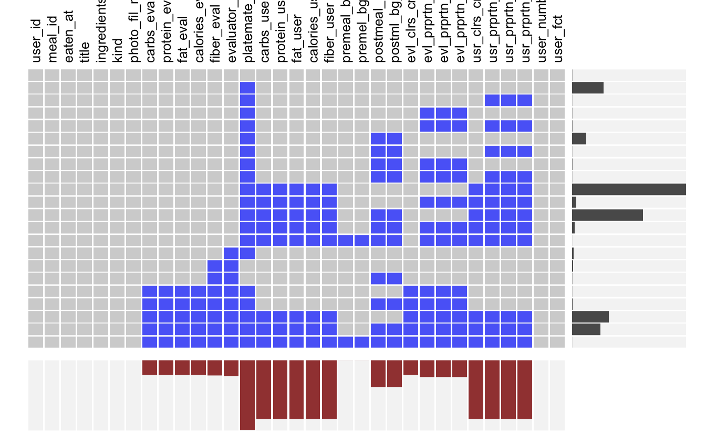
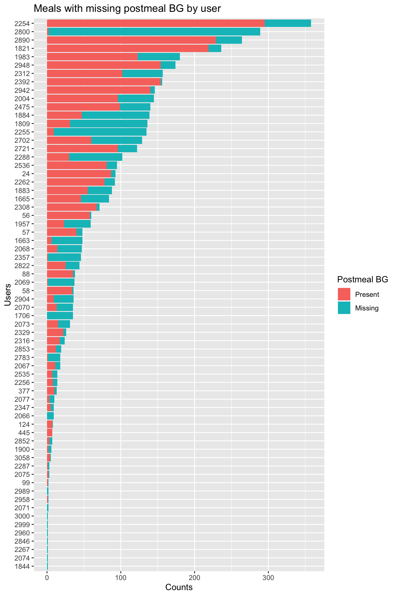

Chapter 5 Results
5.1 Consistent meal times vs grazers
meals_data %>%
mutate(eaten_at_hour = hour(eaten_at)) %>%
ggplot() +
geom_histogram(aes(x=eaten_at_hour), bins = 24) +
facet_wrap(~user_id, ncol = 7) +
labs(
title = "Distribution of hours when users had a meal"
) +
theme(
#strip.text = element_text(size=25)
) Talking point: eating patterns of people - two humps, three humps, no pattern. If eating twice a day, what meal ater they skipping?
Talking point: eating patterns of people - two humps, three humps, no pattern. If eating twice a day, what meal ater they skipping?
5.2 Meal kind analysis
dplyr::summarise(group_by(meals_data, user_id, kind), freq = n()) %>%
group_by(user_id) %>%
mutate(prop = freq/sum(freq)) %>%
ungroup() %>%
ggplot(aes(x = user_id, y = prop, fill = forcats::fct_rev(kind))) +
geom_bar(stat = "identity") +
coord_flip() +
labs(x = "User ID",
y = "Proportion",
title = "Proportion of All Meals by Meal Kind") +
theme(legend.title = element_blank(), legend.position="bottom") +
guides(fill = guide_legend(nrow = 1, reverse=T))
Talking point: lots of people eat breakfast, lot o people capture snacks (good study subjects)
meals_data %>%
select(user_id,carbs_eval, protein_eval,fat_eval,fiber_eval) %>%
gather(key = "variable", value, -user_id) %>%
group_by(user_id, variable) %>%
summarise(total=sum(value, na.rm = T)) %>%
group_by(user_id) %>%
mutate(prop = total/sum(total)) %>%
ungroup() %>%
ggplot(aes(x = user_id, y = prop, fill = forcats::fct_rev(variable))) +
geom_bar(stat = "identity") +
coord_flip() +
labs(x = "User ID",
y = "Proportion",
title = "Proportion of All Meals by Nutrient") +
theme(legend.title = element_blank(), legend.position="bottom") +
guides(fill = guide_legend(nrow = 1, reverse=T))
Question: need a better visulization. Protein and carbs are easy to compare across (they are aligned at the ends), but fat and fiber are difficult to compare across users.
5.3 Per user analysis
5.3.1 Correlation between variables
library(lattice) #sploms
meals_data %>%
filter(user_id == focus_user_id) %>%
mutate(
protein_fat=eval_proportion_protein-eval_proportion_fat,
protein_carb=eval_proportion_protein-eval_proportion_carbs,
carb_fat=eval_proportion_carbs-eval_proportion_fat) %>%
select(calories_eval, carbs_eval, fat_eval, protein_eval, fiber_eval, premeal_bg, postmeal_bg, bg_impact, protein_fat, protein_carb, carb_fat) %>%
splom()
library(lattice) #sploms
meals_data %>%
filter(user_id == focus_user_id) %>%
mutate(
protein_fat_log_ratio=log(eval_proportion_protein/(eval_proportion_fat+0.0000001)),
protein_carb_log_ratio=log(eval_proportion_protein/(eval_proportion_carbs+0.0000001)),
carb_fat_log_ratio=log(eval_proportion_carbs/(eval_proportion_fat+0.0000001))
) %>%
select(eval_calories_computed, eval_proportion_carbs, eval_proportion_fat, eval_proportion_protein, premeal_bg, postmeal_bg, bg_impact, protein_fat_log_ratio, protein_carb_log_ratio, carb_fat_log_ratio) %>%
splom()
Talking points:
- Correlation between calories_eval and all carbs|fat|protein, but much smaller correlation to fiber. Fiber is counted as carbs when calculating the calories_calculated. So when evaluators were estimating the calories_eval, they should have been discurding fiber.
- premeal_bg and postmeal_bg - positively correlated
- negative correlation between eval_proportion_carbs & eval_proportion_fat
- interactions between …_log_ratio varables split the meals into 2 or 3 clusters
5.3.2 Time effect
5.3.3 Meal BG impact visualization
meals_data %>%
#filter(user_id == focus_user_id) %>%
ggplot() +
facet_wrap(~user_id, ncol = 7) +
geom_segment(aes(x = -premeal_bg_delay_minutes, xend = postmeal_bg_delay_minutes, y=premeal_bg, yend=postmeal_bg), alpha = 0.5) +
scale_x_continuous(breaks=c(-15, 0, 60, 120, 180, 240), labels = c("-15min", "0", "1h", "2h", "3h", "4h"), limits = c(-15, 180)) +
theme(
strip.text = element_text(size=25)
)## Warning: Removed 1678 rows containing missing values (geom_segment).
Talking point: some users take insulin. Need to have a data back it up. Lots of users that have a flat response, and some users have big ups and downs.